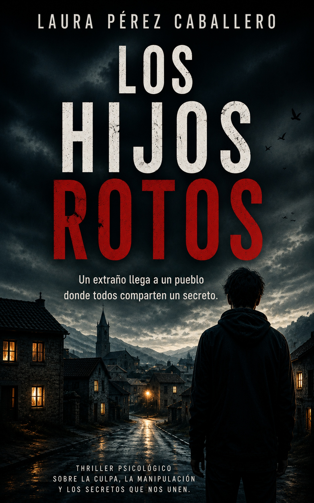

«¿Quién es realmente ese muchacho? ¿A qué ha venido? ¿Y por qué todos empiezan a temerlo?»
Una historia de horror y manipulación.
Un extraño llega a un pueblo donde todos comparten un secreto. Poco a poco, su inexplicable presencia se va volviendo cada vez más inquietante y amenaza con sacar a la luz esos secretos que todos conocen, pero que nadie quiere recordar ni pronunciar en voz alta.
Mientras el miedo y la culpa se apoderan de sus habitantes, una pregunta ronda la cabeza de todos: ¿quién es realmente ese muchacho? ¿A qué ha venido?
Un thriller psicológico con tintes de horror social sobre el poder de la influencia, los secretos compartidos y la oscuridad que puede esconder una comunidad en apariencia tranquila.
A veces el verdadero horror no es que llegue alguien dispuesto a descubrir nuestros secretos, sino descubrir que llevamos demasiado tiempo viviendo con ellos.
Llegó de forma imprevista. Tan imprevista como llega una ligera brisa en un día abrasador de verano. De improviso, como un placer volátil e irresistible.
La casa estaba a la salida o a la entrada del pueblo, según se mirara, de estilo indiano y casi en ruinas, como su propietario. En El Páramo, Rei se presenta con unos ojos de un verde afilado y una certeza inquietante: «No pertenezco al mundo, el mundo me pertenece.»
No necesita mostrarte el monstruo para hacerte sentir miedo. El verdadero terror está en lo que se intuye, en las miradas, en los silencios. Una mezcla brillante entre thriller psicológico y horror social.
Me lo leí en dos tardes. Te va sorprendiendo en cada giro que da la historia que no te ves venir. Un misterio que no se desvela hasta el final y que te hará que no sueltes el libro.
Es adictiva, trepidante, con unos pedazo de giros… una trama BRUTAL. Como siempre, leer a Laura es un acierto.
Lleno de giros dramáticos de los acontecimientos, ¡incluso doble giro! La pluma de la autora me encanta, súper ágil y adictiva.
Si te gustan los thrillers psicológicos, no podrás dejar de leer sus páginas. Una trama muy bien hilada con un gran talento narrativo.
Una novela bastante original y diferente a lo que suelo leer. Lo que más me ha gustado han sido los giros del final, porque consiguen darle sentido a muchas cosas.
Laura Pérez Caballero nació en 1976 en Mieres, Asturias, donde sigue residiendo. Comenzó su carrera literaria escribiendo relatos, con los que obtuvo premios como el Primer Premio del concurso Todos somos iguales, todos somos diferentes de Madrid, el Primer Premio del concurso El mejor maestro organizado por Zenda libros, y el Palacio Valdés de Jaén en tres ocasiones.
En Amazon tiene novelas de varios géneros, siendo el predominante el thriller: La tormenta infinita, Dioses de Piedra, La cruz del verdugo, El hombre que amaba demasiado y El orfanato, los hijos de Sariel —con el que llegó al nº1 de los más vendidos en la categoría de Historias de fantasmas— son sus libros más destacados.
Su última novela es Los hijos rotos, un thriller psicológico sobre una historia de manipulación.
Página de la autora en Amazon →Los hijos rotos está disponible en Amazon. Entra en El Páramo… si te atreves.